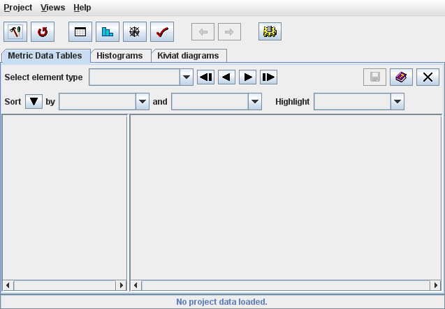
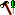
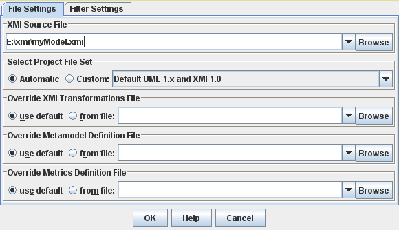
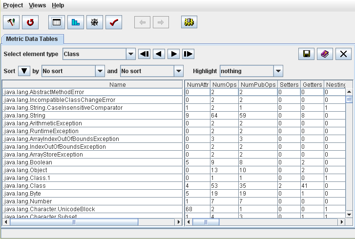
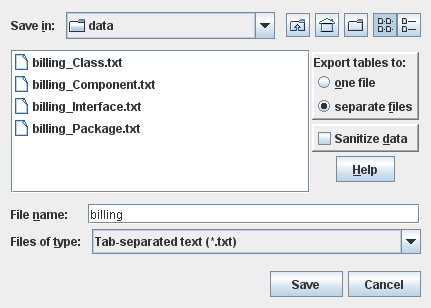

| Prev - Next - Down | SDMetrics - the UML design measurement tool |

Figure 1: SDMetrics main window
Calculating a set of metrics takes four steps:
Click the  button or select "Project -> Edit Project Settings" from the menu bar.

Figure 2: Project File Settings Dialog
You specify the XMI file to read in the "XMI Source File" box at the top of the project settings dialog. Click the topmost "Browse..." button and use the file chooser dialog to select your XMI file.
At this point, you don't need to worry about the remaining options in the Project File Settings dialog; leave everything at "Automatic" and "use default", and click the "OK" button to confirm your selection.
Step 2: Calculate the metrics
After you specified your project files, select "Project->Calculate Metrics" from the menu bar, or click the button on the tool bar. SDMetrics will read your XMI design file and calculate the metrics. This is a fully automated process that usually takes a few seconds. You can monitor its progress on the status bar.

Figure 3: Table view of calculated metrics
Step 3: Explore the metric data
To explore the metric data, SDMetrics provides several views of the data, for instance:
Step 4: Export the metrics data for further processing
You can export the metric data tables for further processing with your favorite spreadsheet software or statistical software packages. Go back to the "Metric Data Tables" view and click the button on the upper right corner of the view. This opens the data export dialog window.

Figure 4: Data Export Dialog
Here you can specify whether to write the data tables to one or several output files, and select the file format for the output files (tab-separated text, HTML, etc).
This completes the brief guided tour of some of SDMetrics' most important features. The following section describes these and all other features of SDMetrics in detail.
| Prev | Up | Next |
| Section 2.6 "Uninstalling SDMetrics" | Contents | Section 4 "The SDMetrics User Interface" |